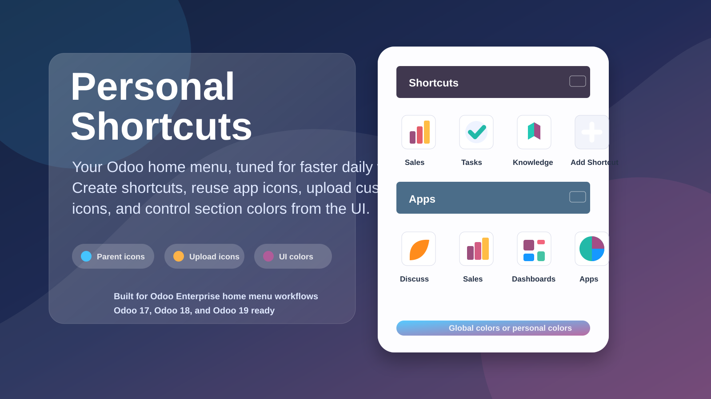
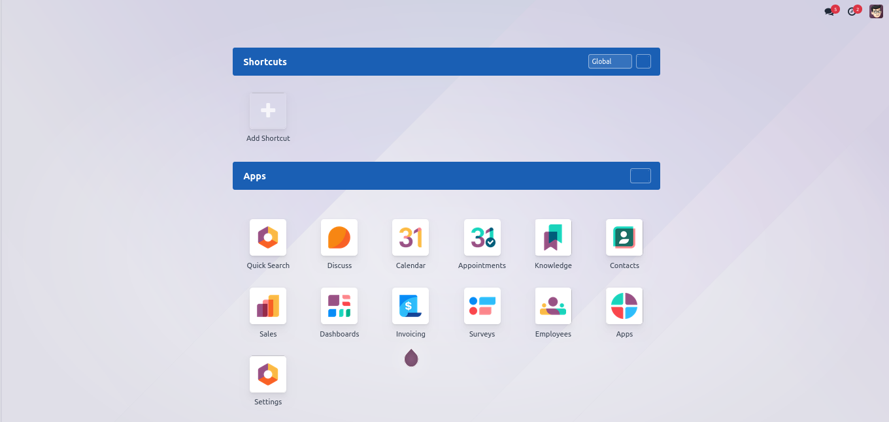
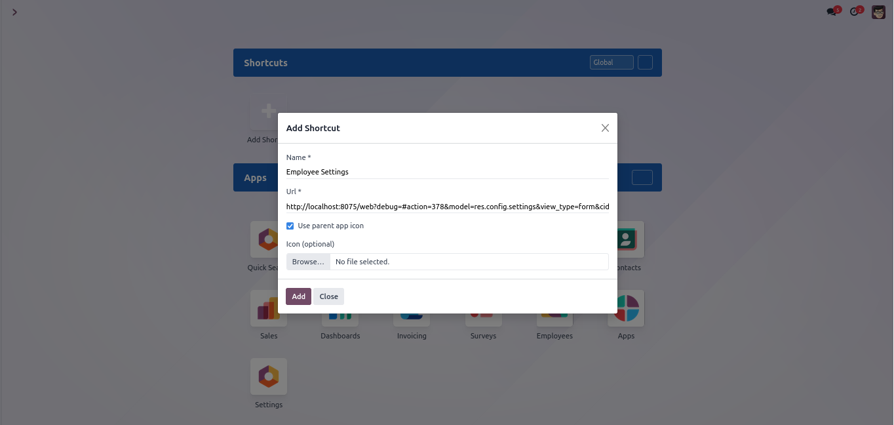
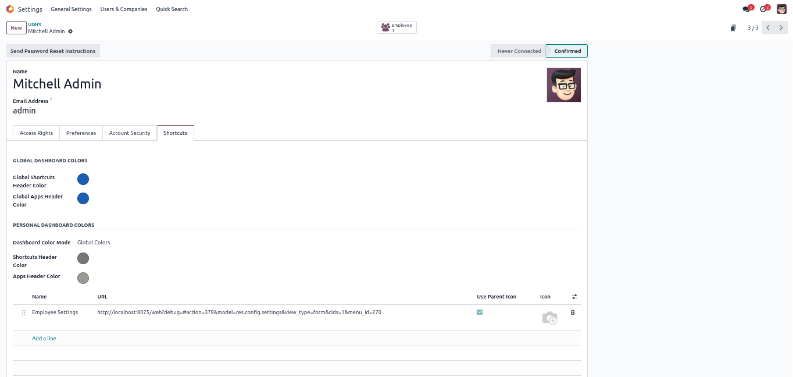
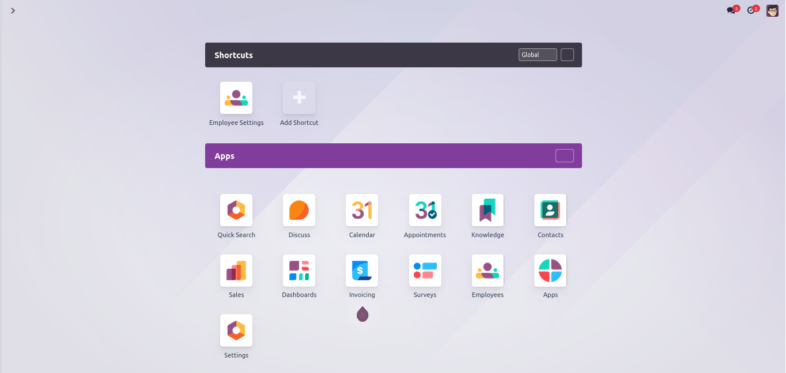

Add a dedicated shortcut section to the Odoo Enterprise home menu. Users can create their own quick links, reuse parent app icons, upload custom icons, reorder shortcuts, and apply dashboard header colors directly from the interface.

Keep important Odoo pages, actions, and external links available from the first screen your users see after login.
Adds a Shortcuts area above the standard Apps section on the Enterprise home menu.
Upload a custom shortcut icon or let the shortcut reuse the detected parent Odoo app icon by default.
Users can arrange shortcuts in the order that matches their daily workflow.
Administrators can set shared header colors, while personal mode can keep a user's own dashboard color preference.
Open the home menu, click Add Shortcut, enter a name and URL, choose parent app icon mode or upload an icon, then reorder shortcuts as needed. Admins can also tune the Shortcuts and Apps header colors from the dashboard UI.
See how Personal Shortcuts appears in the Odoo home menu, shortcut dialog, user preferences, and dashboard color controls.




Install the module, refresh the apps list, and open the Odoo home menu to start creating personal shortcuts.
Use Odoo URLs such as /odoo/action-123, paths with menu or action parameters, or full external links such as https://example.com.
Common questions about shortcut ownership, icons, and dashboard colors.
No. Each shortcut belongs to one user, so every person can keep a dashboard layout that matches their work.
Yes. When parent icon mode is enabled, the module detects the related Odoo menu or action and displays that app icon where possible.
Administrators can edit colors from the front UI. Global colors affect users using global mode, while personal mode keeps the user's own colors.
Yes. Disable parent app icon mode for a shortcut and upload your preferred image from the shortcut form.